点击上方 Signal Board，进入我的个人网站
👋 关注 AI，也关注 AI 背后的人。
我是 FengLi / 李烽立，一名 AI 产品经理。
我围绕真实问题探索 AI 产品，从需求梳理、原型设计，到 Agent Skills 和工具实践。
也把过程中的方法与经验整理成文档、文章和可复用的工作流。
希望让技术回到具体的使用场景，把想法做成能用的东西。
THINK 从问题出发 · BUILD 动手验证 · SHARE 记录与分享
🌐 个人网站 · 📕 小红书 · 📝 公众号
⭐ 代表作
🎯 我的关注
- 产品思考：从用户、场景和问题出发，判断 AI 应该参与哪一步。
- 动手实践：围绕 Agent、RAG 与工作流，做原型、工具和可复用的 Skills。
- 表达与分享：把技术探索整理成产品文档、视觉内容和可理解的方法。